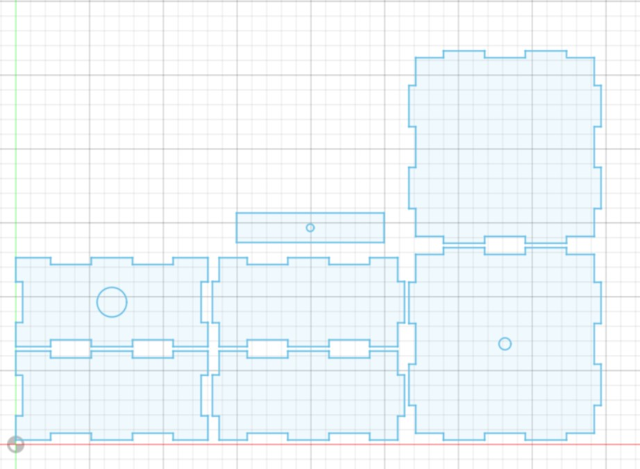
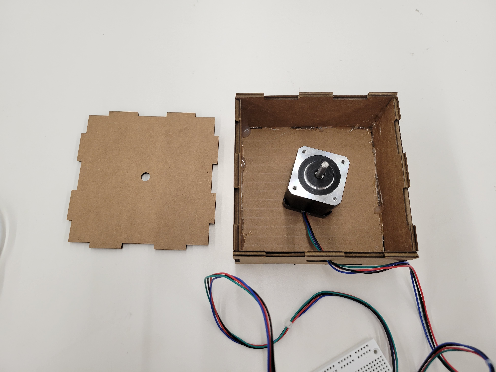
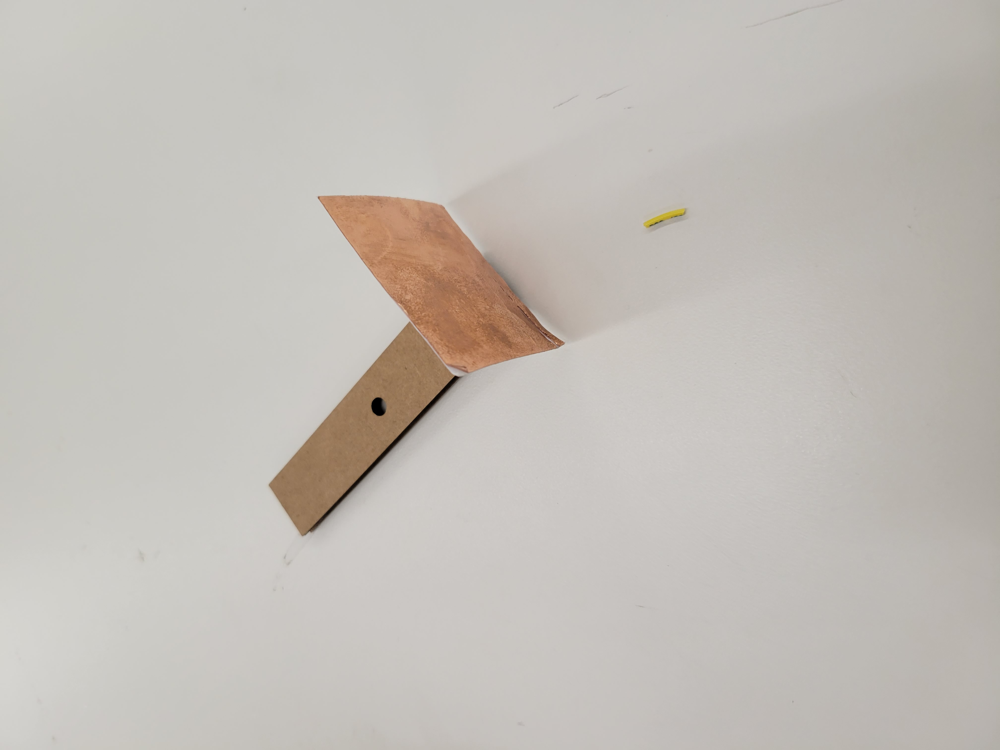
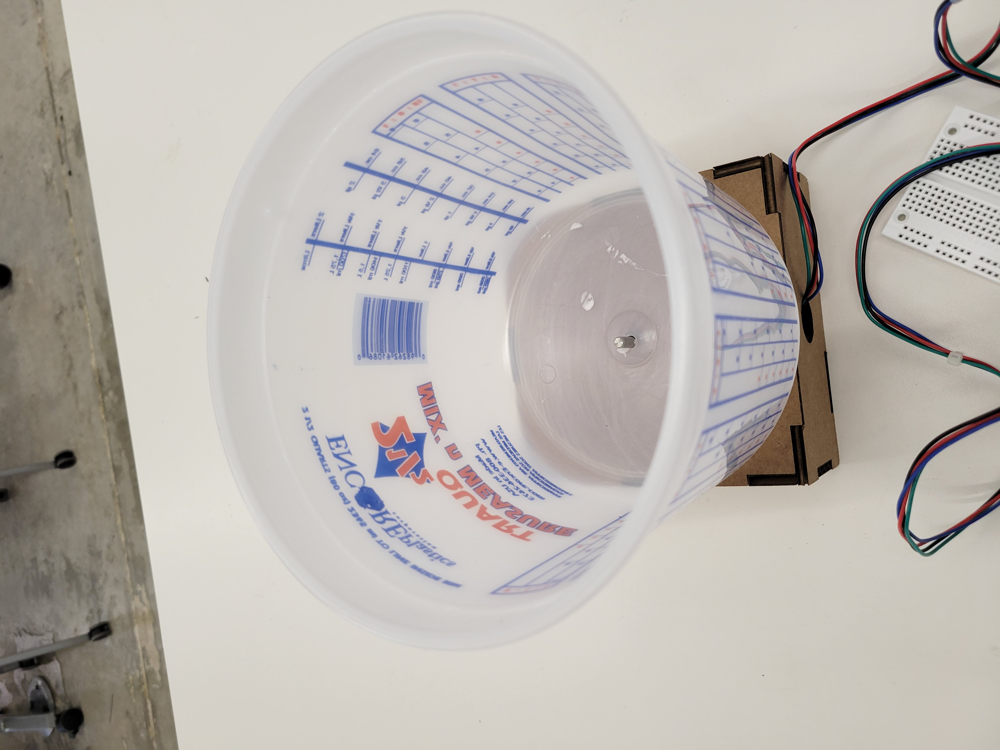
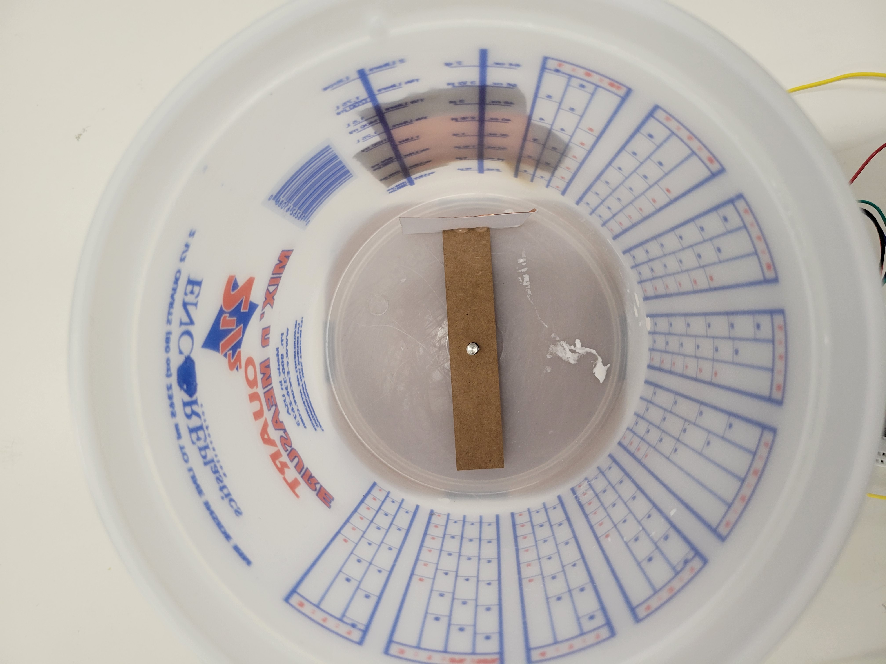

<div class="container-fluid">
### Week 10: Machine Building and End Effectors
This week, I decided to create a blender. To began, I first lasercut a press-fit cardboard box to serve as a base for my blender and contain my stepper motor. I also added a hole in the top for the shaft of the stepper motor and another on the back for wiring.

I then cut the box out, placed the stepper motor inside, and wired the stepper motor to an ESP32 Huzzah.

I then took a bucket, which I planned to use as the basin for the blender. I then drilled a hole in the bottom so that the shaft of the motor could fit in the basin. I then needed two things: a "blade" to blend, and a way to home the motor for reproducible blends. I began by laser-cutting a blade made out of cardboard. I then decided to use a basic capacitive sensor to home the motor. I attached a sheet of copper tape to the blade, and another stuck to the outside of the basin.


The idea is that the capacitive sensor would detect changes in proximity as the blade turns, because the capacitive plate on the edge of the blade varies its distance from the other plate on the outside of the basin.
I used a 1M resistor to dampen the input of the capacitive sensor, tested it for calibration, and then installed the blade and sensor in the basin.

I then wrote code using the AccelStepper package. This code uses the setup loop to home the machine by turning clockwise until the capacitance exceeds the tested threshold, indicating that the plates are aligned parallel.
Then it shifts into blend mode, spinning clockwise at speed.
```
#include <AccelStepper.h>
const int stepPin = 13; // blue
const int dirPin = 12; // orange
const int sensorPin = A4;
// Define a stepper and the pins it will use
AccelStepper stepper(1, stepPin, dirPin); // initialise accelstepper for a two wire board
void setup()
{
pinMode(sensorPin, INPUT);
stepper.setMaxSpeed(200);
while(analogRead(sensorPin) <= 750)
{
stepper.setSpeed(50);
stepper.run();
}
stepper.setCurrentPosition(stepper.currentPosition());
}
void loop()
{
stepper.setMaxSpeed(1000);
stepper.setSpeed(200);
stepper.run();
}
```
[Click here for the video of the machine in action.](https://youtube.com/shorts/PvvTsDHjYM4?feature=share)